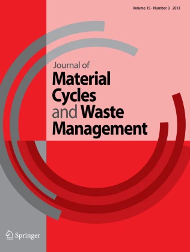

Microwave-assisted pyrolysis of polyethylene terephthalate with polypropylene, polystyrene, and polyethylene for resource recovery
This study demonstrates the synergistic effects during co-pyrolysis of mixtures of plastics, viz., polyethylene terephthalate (PET) with polystyrene (PS), polypropylene (PP) and polyethylene (PE), and elucidates the effect of plastic blending on pyrolysis product yields and their composition. Using graphite as a susceptor, pyrolysis was conducted at a microwave power of 600 W until 500 °C with a power density at 30 W/g. Highest liquid yield was obtained from PS (92%) followed by PP (69.9%), PE (32.1%) and PET (17.2%). Gas chromatograph/mass spectrometric (GC/MS) analysis of the co-pyrolysis oil from PET + PP and PET + PE revealed the formation of alcohols and acids as the major components, whereas PET + PS resulted in styrene and aromatic oxygenates. The synergistic effects increased the oil yield by 17.65% and 19.45% in case of PS + PET and PE + PET blends, respectively, whereas it decreased by 24.15% for PP + PET. The addition of PET shifted the carbon number of the hydrocarbons in the oil from low (C9) to moderate (C18) range in case of PP, and from high (C60) to moderate range (C16) in the case of PE. The analysis of non-condensable gases revealed that the addition of PET increased the production of CO and CO2 gases.